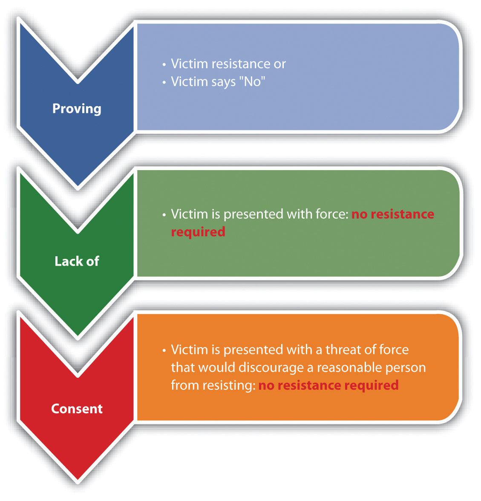
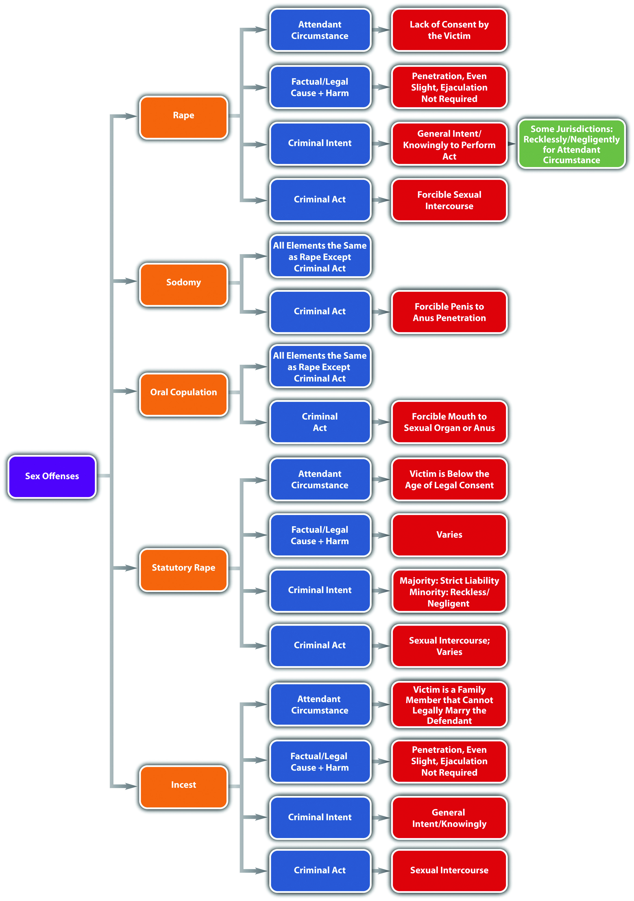
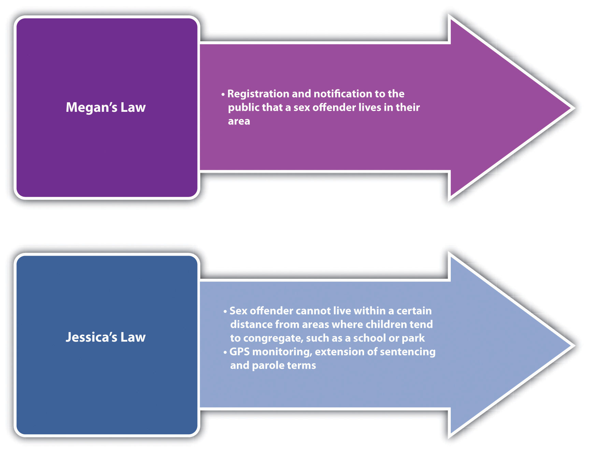
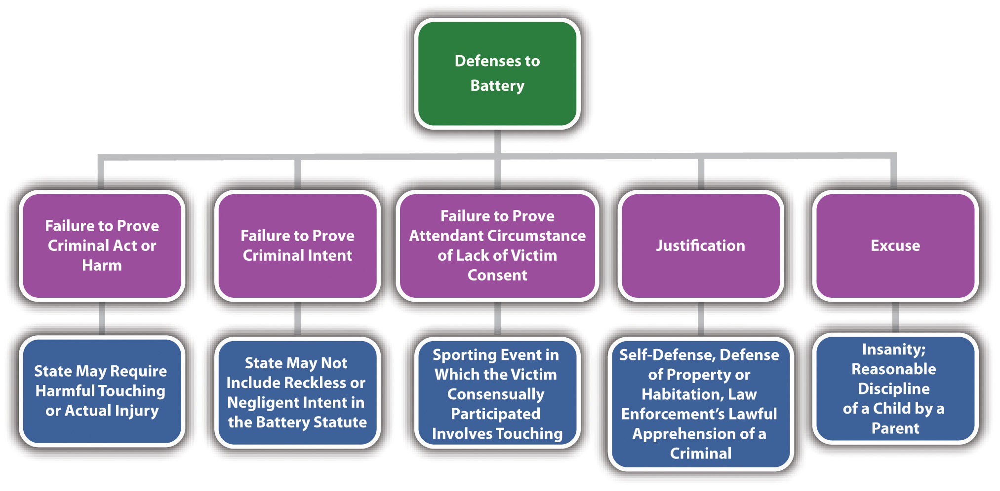

Source: Image courtesy of Tara Storm.
Among the evils that both the common law and later statutory prohibitions against kidnapping sought to address were the isolation of a victim from the protections of society and the law and the special fear and danger inherent in such isolation.
State v. Salaman, cited in Section 10.4 "Kidnapping and False Imprisonment"
In this section, you learn the elements of rapeThe forcible sexual penetration of a victim without consent. and related sex offenses and examine defenses based on consent. In upcoming sections, you analyze the elements of other crimes involving force, fear, and physical restraint, including assault, battery, domestic violence, stalking, and kidnapping.
The word rape has its roots in the Latin word rapere, which means to steal or seize. At early common law, rape was a capital offense. The elements of rape were forcible sexual intercourse, by a man, with a woman not the spouse of the perpetrator, conducted without consent, or with consent obtained by force or threat of force.Donna Macnamara, “History of Sexual Violence,” Interactive theatre.org website, accessed February 8, 2011, http://www.interactivetheatre.org/resc/history.html. The rape prosecution required evidence of the defendant’s use of force, extreme resistance by the victim, and evidence that corroborated the rape victim’s testimony. The common law also recognized the crime of sodomy. In general, sodomy was the penetration of the male anus by a man. Sodomy was condemned and criminalized even with consent because of religious beliefs deeming it a crime against nature.“Sex Offenses,” Lawbrain.com website, accessed February 8, 2011, http://lawbrain.com/wiki/Sex_Offenses.
In the 1970s, many changes were made to rape statutes, updating the antiquated common-law approach and increasing the chances of conviction. The most prominent changes were eliminating the marital rape exemption and the requirement of evidence to corroborate the rape victim’s testimony, creating rape shield laws to protect the victim, and relaxing the necessity for the defendant’s use of force or resistance by the victim.Matthew R. Lyon, “No means No? Withdrawal of Consent During Intercourse and the Continuing Evolution of the Definition of Rape,” Findarticles.com website, accessed February 8, 2011, http://findarticles.com/p/articles/mi_hb6700/is_1_95/ai_n29148498/pg_3/?tag=content;col1. Many jurisdictions also changed the name of rape to sexual battery, sexual assault, or unlawful sexual conduct and combined sexual offenses like rape, sodomy, and oral copulation into one statute. Although some states still have statutes that provide the death penalty for rape, the US Supreme Court has held that rape, even child rape, cannot be considered a capital offense without violating the Eighth Amendment cruel and unusual punishment clause, rendering these statutes unenforceable.Kennedy v. Louisiana, 128 S. Ct. 2641 (2008), accessed February 8, 2011, http://www.oyez.org/cases/2000-2009/2007/2007_07_343.
Sodomy law has likewise been updated to make sodomy a gender-neutral offense and preclude the criminalization of consensual sexual conduct between adults. The US Supreme Court has definitively held that consensual sex between adults may be protected by a right of privacy and cannot be criminalized without a sufficient government interest.Lawrence v. Texas, 539 U.S. 558 (2003), accessed February 8, 2011, http://www.oyez.org/cases/2000-2009/2002/2002_02_102.
Table 10.1 Comparing Common Law Rape and Sodomy with Modern Statutes
| Crime | Criminal Act | Lack of Victim Consent? | Victim Resistance? | Other Differences |
|---|---|---|---|---|
| Common-law rape | Penis-vagina penetration | Yes | Yes, extreme resistance | Corroborative evidence required; no spousal rape; capital crime |
| Modern rape | Some states include any sexual penetration | Yes | Not if force is used, or threat of force that would deter a reasonable person from resisting (See section 10.1.2.2.2.) | No corroborative evidence required; spousal rape is a crime in some jurisdictions; rape is not a capital crime. |
| Common-law sodomy | Male penis-male anus penetration | No. Even consensual sodomy was criminal. | No. Even consensual sodomy was criminal. | |
| Modern sodomy | Gender-neutral penis-anus penetration | Yes | Same as modern rape, above | Consensual sodomy in prison or jail is still criminal in some jurisdictions. (See section 10.1.7.) |
In modern times, rape is a crime that has the elements of criminal act, criminal intent, causation, and harm. Rape also has an attendant circumstance element, which is lack of consent by the victim.
The criminal act element required for rape in many states is sexual intercourse, accomplished by force or threat of force.Md. Code Ann. § 3-303, accessed February 8, 2011, http://law.justia.com/maryland/codes/2005/gcr/3-303.html. Sexual intercourse is typically defined as penetration of a woman’s vagina by a man’s penis and can also be referred to as vaginal intercourse.Md. Code Ann. § 3-301(g), accessed February 8, 2011, http://law.justia.com/maryland/codes/2005/gcr/3-301.html. Some jurisdictions include the penetration of the woman’s vagina by other body parts, like a finger, as sexual intercourse.K.S.A. § 21-3501(1), accessed February 8, 2011, http://law.justia.com/kansas/codes/2006/chapter21/statute_11553.html. The Model Penal Code defines the criminal act element required for rape as sexual intercourse that includes “intercourse per os or per anum,” meaning oral and anal intercourse (Model Penal Code § 213.0(2)). In most jurisdictions, a man or a woman can commit rape.K.S.A. § 21-3502, accessed February 8, 2011, http://law.justia.com/kansas/codes/2006/chapter21/statute_11554.html.
Although it is common to include force or threat of force as an indispensible part of the rape criminal act, some modern statutes expand the crime of rape to include situations where the defendant does not use force or threat, but the victim is extremely vulnerable, such as an intoxicated victim, an unconscious victim, or a victim who is of tender years.K.S.A. § 21-3502, accessed February 8, 2011, http://law.justia.com/kansas/codes/2006/chapter21/statute_11554.html. The Model Penal Code includes force, threat of force, and situations where the defendant has impaired the victim’s power to control conduct by administering intoxicants or drugs without the victim’s knowledge or sexual intercourse with an unconscious female or a female who is fewer than ten years old (Model Penal Code § 213.1(1)). Other statutes may criminalize unforced nonconsensual sexual intercourse or other forms of unforced nonconsensual sexual contact as less serious forms of rape with reduced sentencing options.N.Y. Penal Law § 130.25(3), accessed February 10, 2011, http://law.onecle.com/new-york/penal/PEN0130.25_130.25.html.
Alex and Brad play video games while Brad’s sister Brandy watches. Brad tells Alex he is going to go the store and purchase some beer. While Brad is gone, Alex turns to Brandy, pulls a knife out of his pocket, and tells her to take off her pants and lie down. Brandy tells Alex, “No, I don’t want to,” but thereafter acquiesces, and Alex puts his penis into Brandy’s vagina. Alex has probably committed the criminal act element required for rape in most jurisdictions. Although Alex did not use physical force to accomplish sexual intercourse, his threat of force by display of the knife is sufficient. If the situation is reversed, and Brandy pulls out the knife and orders Alex to put his penis in her vagina, many jurisdictions would also criminalize Brandy’s criminal act as rape. If Alex does not use force or a threat of force, but Brandy is only nine years old, some jurisdictions still criminalize Alex’s act as rape, as would the Model Penal Code.
In many jurisdictions, the attendant circumstance element required for rape is the victim’s lack of consent to the defendant’s act.Md. Code Ann. § 3-304, accessed February 8, 2011, http://law.justia.com/maryland/codes/gcr/3-304.html. Thus victim’s consent could operate as a failure of proof or affirmative defense.
Proving lack of consent has two components. First, the victim must be legally capable of giving consent. If the victim is under the age of consent or is mentally or intellectually impaired because of a permanent condition, intoxication, or drugs, the prosecution does not have to prove lack of consent in many jurisdictions.K.S.A. § 21-3502, accessed February 8, 2011, http://law.justia.com/kansas/codes/2006/chapter21/statute_11554.html. Sexual intercourse with a victim under the age of consent is a separate crime, statutory rape, which is discussed shortly.
The second component to proving lack of consent is separating true consent from consent rendered involuntarily. Involuntary consent is present in two situations. First, if the victim consents to the defendant’s act because of fraud or trickery—for example, when the victim is unaware of the nature of the act of sexual intercourse—the consent is involuntary. A victim is generally unaware of the nature of the act of sexual intercourse when a doctor shams a medical procedure.Iowa v. Vander Esch, 662 N.W. 2d 689 (2002), accessed February 10, 2011, http://scholar.google.com/scholar_case?case=4906781834239023314&q= rape+%22fraud+in+the+inducement%22&hl=en&as_sdt=2,5&as_ylo=2002. This is called fraud in the factumThe defendant fraudulently conceals the nature of the sexual act, like a doctor shamming a medical procedure. Fraud in the factum could render the victim’s consent involuntary.. Fraud in the inducementThe defendant fraudulently conceals the circumstances of the sexual act, like fraudulently representing that the sexual act will cure a disease. Fraud in the inducement does not render the victim’s consent involuntary., which is a fraudulent representation as to the circumstances accompanying the sexual conduct, does not render the consent involuntary in many jurisdictions. An example of fraud in the inducement is a defendant’s false statement that the sexual intercourse will cure a medical condition.Boro v. Superior Court, 163 Cal. App. 3d 1224 (1985), accessed February 17, 2011, http://scholar.google.com/scholar_case?case=8450241145233624189&q= Boro+v.+Superior+Court&hl=en&as_sdt=2,5.
A more common example of involuntary consent is when the victim consents to the defendant’s act because of force or threat of force. The prosecution generally proves this type of consent is involuntary by introducing evidence of the victim’s resistance.
Figure 10.1 Diagram of Consent

Under the common law, the victim had to manifest extreme resistance to indicate lack of consent. In modern times, the victim does not have to fight back or otherwise endanger his or her life if it would be futile to do so. In most jurisdictions, the victim only needs to resist to the same extent as a reasonable person under similar circumstances, which is an objective standard.Del. Code Ann. tit. II, § 761(j) (1), accessed February 9, 2011, http://delcode.delaware.gov/title11/c005/sc02/index.shtml#761.
The use of force by the defendant could eliminate any requirement of victim resistance to prove lack of consent.N.Y. Penal Law § 130.05, accessed February 9, 2011, http://law.onecle.com/new-york/penal/PEN0130.05_130.05.html. If the defendant obtains consent using a threat of force, rather than force, the victim may not have to resist if the victim experiences subjective fear of serious bodily injury, and a reasonable person under similar circumstances would not resist, which is an objective standard.Minn. Stat. Ann. § 609.343(c), accessed February 10, 2011, https://www.revisor.mn.gov/statutes/?id=609.343. Threat of force can be accomplished by words, weapons, or gestures. It can also be present when there is a discrepancy in size or age between the defendant and the victim or if the sexual encounter takes place in an isolated location. The Model Penal Code considers it a felony of the third degree and gross sexual imposition when a male has sexual intercourse with a female not his wife by compelling “her to submit by any threat that would prevent resistance by a woman of ordinary resolution” (Model Penal Code § 213.1(2)(a)). Note that the Model Penal Code’s position does not require the threat to be a threat of force; it can be any type of threat that prevents physical resistance.
If the victim does not physically resist the criminal act, the prosecution must prove that the victim affirmatively indicated lack of consent in some other manner. This could be a verbal response, such as saying, “No,” but the verbal response must be unequivocal. In the most extreme case, at least one court has held that a verbal “No” during the act of sexual intercourse is sufficient, and the defendant who continues with sexual intercourse after being told “No” is committing the criminal act of rape.In re John Z., 29 Cal. 4th 756 (2003), accessed February 10, 2011, http://scocal.stanford.edu/opinion/re-john-z-32309.
Figure 10.2 Proving Lack of Consent
At early common law, a victim’s testimony was insufficient evidence to meet the burden of proving the elements of rape, including lack of consent. The victim’s testimony had to be supported by additional corroborative evidenceEvidence that tends to support a victim’s testimony.. Modern jurisdictions have done away with the corroborative evidence requirement and allow the trier of fact to determine the elements of rape or lack of consent based on the victim’s testimony alone.State v. Borthwick, 880 P.2d 1261 (1994), accessed February 10, 2011, http://www1.law.umkc.edu/suni/CrimLaw/calendar/Class_24_borthwick_case.htm. However, statistics indicate that rape prosecutions often result in acquittal. Thus although technically the victim’s testimony need not be corroborated, it is paramount that the victim promptly report the rape to the appropriate authorities and submit to testing and interrogation to preserve any and all forms of relevant rape evidence.
Review the example with Brandy and Alex in Section 10 "Example of Rape Act". In this example, after an initial protest, Brandy lies down, takes off her pants, and allows Alex to put his penis in her vagina when he pulls out a knife. It is likely that the trier of fact will find the rape attendant circumstance in this case. Although Brandy acquiesced to Alex’s demands without resisting, she did so after Alex took a knife out of his pocket, which is a threat of force. In addition, Brandy expressed her lack of consent verbally before submitting to Alex’s demand. A trier of fact could determine that Brandy experienced a fear of serious bodily injury from Alex’s display of the knife, and that a reasonable person under similar circumstances would give in to Alex’s demands without physical resistance.
Change this example and assume that after Brad leaves, Alex asks Brandy to have sexual intercourse with him. Brandy responds, “No,” but allows Alex to remove her pants and put his penis in her vagina without physically resisting. The trier of fact must make the determination of whether Alex accomplished the sexual act by force or threat of force and without Brandy’s consent. If Brandy testifies that she said “No” and did not consent to Alex’s act, and Alex testifies that Brandy’s verbal response was insufficient to indicate lack of consent, the trier of fact must resolve this issue of fact, and it can do so based on Brandy’s testimony, uncorroborated, in many jurisdictions. The trier of fact can use the criteria of the difference in age and size between Brandy and Alex, any gestures or words indicating force or threat, and the location and isolation of the incident, among other factors.
The criminal intent element required for rape in most jurisdictions is the general intent or knowingly to perform the rape criminal act.State v. Lile, 699 P.2d 456 (1985), accessed February 8, 2011, http://scholar.google.com/scholar_case?case=5958820374035014869&hl=en&as_sdt=2&as_vis=1&oi=scholarr. This may include the intent to use force to accomplish the objective if the state’s rape statute includes force or threat of force as a component of the criminal act.
As Chapter 4 "The Elements of a Crime" stated, occasionally, a different criminal intent supports the other elements of an offense. In some states, negligent intent supports the rape attendant circumstance of lack of victim consent. This creates a viable mistake of fact defense if the defendant has an incorrect perception as to the victim’s consent. To be successful with this defense, the facts must indicate that the defendant honestly and reasonably believed that the victim consented to the rape criminal act.People v. Mayberry, 542 P.2d 1337 (1975), accessed February 11, 2011, http://scholar.google.com/scholar_case?case=6471351898025391619&hl=en&as_sdt=2&as_vis=1&oi=scholarr. Many jurisdictions expressly disallow the defense, requiring strict liability intent for the lack of consent attendant circumstance.State v. Plunkett, 934 P.2d 113 (1997), accessed February 11, 2011, http://scholar.google.com/scholar_case?case=17940293485668190575&hl=en&as_sdt=2&as_vis=1&oi=scholarr.
Review the example with Alex and Brandy in Section 10 "Example of Rape Act". Change the example so that Alex does not display a knife and simply asks Brandy if she would like to have sex with him. Brandy does not respond. Alex walks over to Brandy and removes her pants. Brandy does not protest or physically resist. Thereafter, Alex asks Brandy if she “likes it rough.” Brandy remains silent. Alex physically and forcibly puts his penis in Brandy’s vagina. In states that allow a negligent intent to support the attendant circumstance of rape, Alex may be able to successfully assert mistake of fact as a defense. It appears that Alex has with general intent or knowingly committed forcible sexual intercourse, based on his actions. In most jurisdictions, the jury could be instructed on an inference of this intent from Alex’s behavior under the circumstances. However, if negligent intent is required to support the attendant circumstance of the victim’s lack of consent, the trier of fact may find that Alex’s mistake as to Brandy’s consent was honest and reasonable, based on her lack of response or physical resistance. If Alex is in a jurisdiction that requires strict liability intent to support the attendant circumstance element, Alex cannot raise the defense because Alex’s belief as to Brandy’s consent would be irrelevant.
The defendant’s criminal act must be the factual and legal cause of the harm, which is defined in Section 10 "Rape Harm".
The harm element of rape in most jurisdictions is penetration, no matter how slight.Idaho Code Ann. § 18-6101, accessed February 10, 2011, http://www.legislature.idaho.gov/idstat/Title18/T18CH61SECT18-6101.htm. This precludes virginity as a defense. In addition, modern statutes do not require male ejaculation, which precludes lack of semen as a defense.Ala. Code § 13A-6-60, accessed February 11, 2011, http://law.justia.com/alabama/codes/2009/Title13A/Chapter6/13A-6-60.html.
Review the example with Alex and Brandy in Section 10 "Example of Rape Act". Assume that Brad walks into the room while Alex and Brandy are engaging in sexual intercourse. Brad tackles Alex and pulls him off Brandy. Alex may be charged with rape, not attempted rape, in most jurisdictions. The fact that Alex did not ejaculate does not affect the rape analysis in any way because most jurisdictions do not require ejaculation as a component of the harm element of rape.
Rape prosecutions can be extremely stressful for the victim, especially when the defendant pursues a consent defense. Before the comprehensive rape reforms of the 1970s, rape defendants would proffer any evidence they could find to indicate that the victim was sexually promiscuous and prone to consenting to sexual intercourse. Fearing humiliation, many rape victims kept their rape a secret, not reporting it to law enforcement. This allowed serial rapists to escape punishment and did not serve our criminal justice goal of deterrence.
In modern times, most states protect rape victims with rape shield lawsStatutes that preclude the admission of evidence in a rape trial of a victim’s previous sexual history unless a judge permits it after a pretrial in camera hearing.. Rape shield laws prohibit the admission of evidence of the victim’s past sexual conduct to prove consent in a rape trial, unless the judge allows it in a pretrial in cameraOutside the presence of the jury. hearing, outside the presence of the jury. Rape shield laws could include the additional protections of the exclusion of evidence relating to the victim’s style of dress to prove consent, the exclusion of evidence that the victim requested the defendant to wear a condom to prove consent, and the affirmation that a victim’s testimony in a rape trial need not be corroborated by other evidence.Fla. Stat. Ann. § 794.022, accessed February 11, 2011, http://law.justia.com/florida/codes/2010/TitleXLVI/chapter794/794_022.html. Most courts permit the admission of evidence proving the victim’s previous consensual sex with the defendant because this evidence is particularly relevant to any consent defense.Colo. Rev. Stat. Ann. § 18-3-407(1) (a), accessed February 14, 2011, http://www.michie.com/colorado/lpext.dll?f=templates&fn=main-h.htm&cp=.
Review the example with Alex and Brandy in Section 10 "Example of Rape Intent". Assume that the jurisdiction in which the example takes place has a rape shield law. If Alex is put on trial for the rape of Brandy and he decides to pursue a consent defense, Alex would not be able to introduce evidence of Brandy’s sexual history with other men unless he receives approval from a judge in an in camera hearing before the trial.
Should the Media Be Permitted to Publish Negative Information about a Rape Victim?
In 2003, Kobe Bryant, a professional basketball player, was indicted for sexually assaulting a nineteen-year-old hotel desk clerk. A mistake by a court reporter listed the accuser’s name on a court website.“Rape Case against Bryant Dismissed,” MSNBC.com website, accessed February 27, 2011, http://nbcsports.msnbc.com/id/5861379. The court removed the victim’s name after discovery of the mistake, but the damage was done. Thereafter, in spite of a court order prohibiting the publication of the accuser’s name, the media, including radio, newspaper, Internet, and television, published the accuser’s name, phone number, address, and e-mail address.Tom Kenworty, Patrick O’Driscoll, “Judge Dismisses Bryant Rape Case,” USAtoday.com website, accessed February 27, 2011, http://www.usatoday.com/sports/basketball/nba/2004-09-01-kobe-bryant-case_x.htm. Products like underwear, t-shirts, and coffee mugs with pictures of the accuser and Bryant in sexual positions were widely available for sale, and the accuser received constant harassment, including death threats.Richard Haddad, “Shield or Sieve? People v. Bryant and the Rape Shield Law in High-Profile Cases,” Columbia Journal of Law and Social Problems, accessed February 27, 2011, http://www.columbia.edu/cu/jlsp/pdf/Spring2%202006/Haddad10.pdf. Although the Colorado Supreme Court ordered pretrial in camera transcripts of hearings pursuant to Colorado’s rape shield law to remain confidential, an order that was confirmed by the US Supreme Court,Associated Press et. al. v. District Court for the Fifth Judicial District of Colorado, 542 U.S. 1301 (2004), accessed February 27, 2011, http://ftp.resource.org/courts.gov/c/US/542/542.US.1301.04.73.html. the accuser was subjected to so much negative publicity that she eventually refused to cooperate and the prosecution dropped the charges in 2004.
Check your answer using the answer key at the end of the chapter.
Kobe Claims Innocence to Sexual Assault Charges
Kobe Bryant and his attorney discuss the charge of rape filed against Kobe in this video:
In modern times, rape defendants are frequently known to the victim, which may change the factual situation significantly from stranger rape. Acquaintance rapeThe victim is raped by an acquaintance. Also called date rape., also called date rape, is a phenomenon that could increase a victim’s reluctance to report the crime and could also affect the defendant’s need to use force and the victim’s propensity to physically resist.The National Center for Victims of Crime, “Acquaintance Rape,” Ncvc.org website, accessed February 14, 2011, http://www.ncvc.org/ncvc/main.aspx?dbName=DocumentViewer&DocumentID=32306. Although studies indicate that acquaintance rape is on the rise,The National Center for Victims of Crime, “Acquaintance Rape,” Ncvc.org website, accessed February 14, 2011, http://www.ncvc.org/ncvc/main.aspx?dbName=DocumentViewer&DocumentID=32306. statutes have not entirely addressed the issues presented in an acquaintance rape fact pattern. To adequately punish and deter acquaintance or date rape, rape statutes should punish nonforcible, nonconsensual sexual conduct as severely as forcible rape. Although the majority of states still require forcible sexual intercourse as the rape criminal act element, at least one modern court has rejected the necessity of any force other than what is required to accomplish the sexual intercourse.State of New Jersey in the Interest of M.T.S., 609 A.2d 1266 (1992), accessed February 14, 2011, http://www.4lawnotes.com/showthread.php?t=1886. Some rape statutes have also eliminated the requirement that the defendant use force and punish any sexual intercourse without consent as rape.Utah Code Ann. § 76-5-402(1), accessed February 14, 2011, http://le.utah.gov/~code/TITLE76/htm/76_05_040200.htm.
As stated previously, at early common law, a man could not rape his spouse. The policy supporting this exemption can be traced to a famous seventeenth-century jurist, Matthew Hale, who wrote, “[T]he husband cannot be guilty of a rape committed by himself upon his lawful wife, for by their mutual matrimonial consent and contract the wife hath given up herself in this kind unto her husband, which she cannot retract” (Hale, History of Pleas of the Crown, p. 629). During the rape reforms of the 1970s, many states eliminated the marital or spousal rapeThe victim of rape is the defendant’s spouse. exemption, in spite of the fact that the Model Penal Code does not recognize spousal rape. At least one court has held that the spousal rape exemption violates the equal protection clause of the Fourteenth Amendment because it discriminates against single men without a sufficient government interest.People v. Liberta, 64 N.Y. 2d 152 (1984), accessed February 14, 2011, http://scholar.google.com/scholar_case?case=1399209540378549726&hl=en&as_sdt=2&as_vis=1&oi=scholarr. In several states that criminalize spousal rape, the criminal act, criminal intent, attendant circumstance, causation, and harm elements are exactly the same as the elements of forcible rape.N. H. Rev. Stat. Ann. § 632-A: 5, accessed February 14, 2011, http://www.gencourt.state.nh.us/rsa/html/LXII/632-A/632-A-5.htm. Many states also grade spousal rape the same as forcible rape—as a serious felony.Utah Code Ann. § 76-5-402(2), accessed February 14, 2011, http://le.utah.gov/~code/TITLE76/htm/76_05_040200.htm. Grading of sex offenses is discussed shortly.
Statutory rapeSexual intercourse with a victim younger than the age of legal consent., also called unlawful sexual intercourse, criminalizes sexual intercourse with a victim who is under the age of legal consent. The age of legal consent varies from state to state and is most commonly sixteen, seventeen, or eighteen.Age of Consent Chart for the U.S.-2010, Ageofconsent.us website, accessed February 14, 2011, http://www.ageofconsent.us.
The criminal act element required for statutory rape in many jurisdictions is sexual intercourse, although other types of sexual conduct with a victim below the age of consent are also criminal.US Department of Health and Human Services, “Statutory Rape: A Guide to State Laws and Reporting Requirements,” ASPE.hhs.gov website, accessed February 16, 2011, http://aspe.hhs.gov/hsp/08/SR/StateLaws/statelaws.shtml. The harm element of statutory rape also varies, although many jurisdictions mirror the harm element required for rape.US Department of Health and Human Services, “Statutory Rape: A Guide to State Laws and Reporting Requirements,” ASPE.hhs.gov website, accessed February 16, 2011, http://aspe.hhs.gov/hsp/08/SR/StateLaws/statelaws.shtml. The attendant circumstance element required for statutory rape is an underage victim.Cal. Penal Code § 261.5, accessed February 15, 2011, http://law.onecle.com/california/penal/261.5.html. There is no requirement for force by the defendant. Nor is there an attendant circumstance element of lack of consent because the victim is incapable of legally consenting.
In the majority of states, the criminal intent element of statutory rape is strict liability.La. Rev. Stat. Ann. § 14-80, accessed February 15, 2011, http://law.justia.com/louisiana/codes/2009/rs/title14/rs14-80.html. However, a minority of states require reckless or negligent criminal intent, allowing for the defense of mistake of fact as to the victim’s age. If the jurisdiction recognizes mistake of age as a defense, the mistake must be made reasonably, and the defendant must take reasonable measures to verify the victim’s age.Alaska Stat. § 11.41.445(b), accessed February 15, 2011, http://law.justia.com/alaska/codes/2009/title-11/chapter-11-41/article-04/sec-11-41-445. The mistake of age defense can be proven by evidence of a falsified identification, witness testimony that the victim lied about his or her age to the defendant, or even the appearance of the victim.
It is much more common to prosecute males for statutory rape than females. The historical reason for this selective prosecution is the policy of preventing teenage pregnancy.Michael M. v. Superior Court, 450 U.S. 464 (1981), accessed February 15, 2011, http://www.oyez.org/cases/1980-1989/1980/1980_79_1344. However, modern statutory rape statutes are gender-neutral.N.Y. Penal Law § 130.30, accessed February 15, 2011, http://law.onecle.com/new-york/penal/PEN0130.30_130.30.html. This ensures that women, especially women who are older than their sexual partner, are equally subject to prosecution.
Gary meets Michelle in a nightclub that only allows entrance to patrons eighteen and over. Gary and Michelle end up spending the evening together, and later they go to Gary’s apartment where they have consensual sexual intercourse. In reality, Michelle is actually fifteen and was using false identification to enter the nightclub. If Gary and Michelle are in a state that requires strict liability for the criminal intent element of statutory rape, Gary can be subject to prosecution for and conviction of this offense if fifteen is under the age of legal consent. If Gary and Michelle are in a state that allows for mistake of age as a defense, Gary could use Michelle’s presence in the nightclub as evidence that he acted reasonably in believing that Michelle was capable of rendering legal consent. If both Gary and Michelle used false identification to enter the nightclub, and both Gary and Michelle are under the age of legal consent, both could be prosecuted for and convicted of statutory rape in most jurisdictions because modern statutory rape statutes are gender-neutral.
Figure 10.3 Comparison of Rape and Statutory Rape

As stated previously, some states include rape, sodomyForcible, nonconsensual, penis to anus penetration., and oral copulationForcible, nonconsensual, mouth to sexual organ or anus penetration. in a sexual assault or sexual conduct statute that criminalizes a variety of sexual acts involving penetration.Alaska Stat. § 11.41.410, accessed February 15, 2011, http://law.justia.com/alaska/codes/2009/title-11/chapter-11-41/article-04/sec-11-41-410. In states that distinguish between rape and sodomy, the criminal act element of sodomy is often defined as forcible penis to anus penetration.Cal. Penal Code § 286(a), accessed February 15, 2011, http://law.justia.com/california/codes/2009/pen/281-289.6.html. Typically, the other sodomy elements, including the lack of consent attendant circumstance, criminal intent, causation, and harm, are the same as the elements of rape. Many jurisdictions also grade sodomy the same as rape. Grading is discussed shortly.
Sodomy that is nonforcible but committed with an individual below the age of legal consent is also criminal.Cal. Penal Code § 286(b), accessed February 15, 2011, http://law.justia.com/california/codes/2009/pen/281-289.6.html. As stated previously, the US Supreme Court has held that statutes criminalizing sodomy between consenting adults unreasonably encroach on a right to privacy without a sufficient government interest.Lawrence v. Texas, 539 U.S. 558 (2003), accessed February 15, 2011, http://www.oyez.org/cases/2000-2009/2002/2002_02_102. In some states, consensual nonforcible sodomy is criminal if it is committed in a state penitentiary or local detention facility or jail.Cal. Penal Code § 286(c) (3) (e), accessed February 15, 2011, http://law.justia.com/california/codes/2009/pen/281-289.6.html.
In states that distinguish between rape, sodomy, and oral copulation, the criminal act element of oral copulation is forcible mouth to sexual organ or anus penetration.Cal. Penal Code § 288a, accessed February 15, 2011, http://law.onecle.com/california/penal/288a.html. Typically, the other oral copulation elements, including the lack of consent attendant circumstance, criminal intent, causation, and harm, are the same as the elements of rape. Many jurisdictions also grade oral copulation the same as rape. Grading is discussed shortly.
A few states still criminalize oral copulation with consent.Ala. Code § 13A-6-65, accessed February 15, 2011, http://www.legislature.state.al.us/CodeofAlabama/1975/13A-6-65.htm. Based on the US Supreme Court precedent relating to sodomy, these statutes may be unenforceable and unconstitutional.
IncestSexual intercourse with a victim who the defendant cannot legally marry because of a family relationship. is also criminal in many jurisdictions. The criminal act element required for incest is typically sexual intercourse.Fla. Stat. Ann. § 826.04, accessed February 15, 2011, http://law.onecle.com/florida/crimes/826.04.html. The attendant circumstance element required for incest is a victim the defendant cannot legally marry because of a family relationship.Del. Code Ann. Tit. 11, § 766, accessed February 15, 2011, http://law.justia.com/delaware/codes/2010/title11/c005-sc02.html. In the majority of jurisdictions, force is not required, and consent is not an attendant circumstance element of incest.Del. Code Ann. Tit. 11, § 766, accessed February 15, 2011, http://law.justia.com/delaware/codes/2010/title11/c005-sc02.html. Thus consent by the victim cannot operate as a defense. If the sexual intercourse with a family member is forcible and nonconsensual, the defendant could be charged with and convicted of rape. The criminal intent element required for incest is typically general intent or knowingly.Fla. Stat. Ann. § 826.04, accessed February 15, 2011, http://law.onecle.com/florida/crimes/826.04.html. The causation and harm elements of incest are generally the same as the causation and harm elements of rape.Fla. Stat. Ann. § 826.04, accessed February 15, 2011, http://law.onecle.com/florida/crimes/826.04.html. However, incest is generally graded lower than forcible rape or sexual assault because force and lack of consent are not required.Del. Code Ann. Tit. 11, § 766, accessed February 15, 2011, http://law.justia.com/delaware/codes/2010/title11/c005-sc02.html.
Hal and Harriet, brother and sister, have consensual sexual intercourse. Both Hal and Harriet are above the age of legal consent. In spite of the fact that there was no force, threat of force, or fraud, and both parties consented to the sexual act, Hal and Harriet could be charged with and convicted of incest in many jurisdictions, based on their family relationship.
Jurisdictions vary when it comes to grading sex offenses. In general, forcible sex crimes involving penetration are graded as serious felonies. Factors that could aggravate grading are gang rape,Fla. Stat. Ann. § 794.023, accessed February 15, 2011, http://law.onecle.com/florida/crimes/794.023.html. the infliction of bodily injury, the use of a weapon, a youthful victim, the commission of other crimes in concert with the sexual offense, or a victim who has mental or intellectual disabilities or who has been compromised by intoxicants.Del. Code Ann. Tit. 11, § 773, accessed February 15, 2011, http://law.justia.com/delaware/codes/2010/title11/c005-sc02.html. The Model Penal Code grades rape as a felony of the second degree unless the actor inflicts serious bodily injury on the victim or another, or the defendant is a stranger to the victim, in which case the grading is elevated to a felony of the first degree (Model Penal Code § 213.1 (1)).
Sexual offenses that do not include penetration are graded lower,N.Y. Penal Law § 130.52, accessed February 15, 2011, http://law.onecle.com/new-york/penal/PEN0130.52_130.52.html. along with offenses that could be consensual.Del. Code Ann. Tit. 11, § 766, accessed February 15, 2011, http://law.justia.com/delaware/codes/2010/title11/c005-sc02.html. Sex offense statutes that criminalize sexual conduct with a victim below the age of legal consent often grade the offense more severely when there is a large age difference between the defendant and the victim, when the defendant is an adult, or the victim is of tender years.Cal. Penal Code § 261.5, accessed February 15, 2011, http://law.onecle.com/california/penal/261.5.html.
Figure 10.4 Diagram of Sex Offenses
Based on a public awareness that sex offenders often reoffend, many states have enacted some form of Megan’s lawA statute requiring sex offender registration and notification to the public of the location of a sex offender. or Jessica’s lawA statute requiring monitoring of a sex offender., which provide for registration, monitoring, control, and elevated sentencing for sex offenders, including those that harm children. Both laws were written and enacted after high-profile cases with child victims became the subject of enormous media attention. Megan’s and Jessica’s law statutes enhance previously enacted statutes that require the registration of sex offenders with local law enforcement agencies.
Typically, a Megan’s law statute provides for registration and notification to the public that a convicted sex offender lives in their area.42 Pa. C. S. § 9799.1, accessed February 15, 2011, http://www.pameganslaw.state.pa.us. A Jessica’s law statute often includes a stay-away order, mandating that a sex offender cannot live within a certain distance from areas such as a school or park where children tend to congregate. Jessica’s law statutes also provide for GPS monitoring and extend the sentencing and parole terms of child sex offenders.Va. Code Ann. § 19.2-295.2:1, accessed February 15, 2011, http://leg1.state.va.us/cgi-bin/legp504.exe?000+cod+19.2-295.2C1.
Figure 10.5 Diagram of Megan’s and Jessica’s Law Statutes
Answer the following questions. Check your answers using the answer key at the end of the chapter.
AssaultGenerally an attempted battery or a threatened battery, although some states and the Model Penal Code combine assault and battery into one statute called assault. and batteryAn unlawful harmful or offensive touching. are two crimes that are often prosecuted together, yet they are separate offenses with different elements. Although modern jurisdictions frequently combine assault and battery into one statute called assault, the offenses are still distinct and are often graded differently. The Model Penal Code calls both crimes assault, simple and aggravated (Model Penal Code § 211.1). However, the Model Penal Code does not distinguish between assault and battery for grading purposes. This section reviews the elements of both crimes, including potential defenses.
Battery is a crime that has the elements of criminal act, criminal intent, attendant circumstance, causation, and harm as is discussed in the subsections that follow.
The criminal act element required for battery in most jurisdictions is an unlawful touching, often described as physical contact.720 ILCS § 12-3, accessed February 18, 2011, http://law.onecle.com/illinois/720ilcs5/12-3.html. This criminal act element is what distinguishes assault from battery, although an individual can be convicted of both crimes if he or she commits separate acts supported by the appropriate intent. The defendant can touch the victim with an instrumentality, like shooting the victim with a gun, or can hit the victim with a thrown object, such as rocks or a bottle. The defendant can also touch the victim with a vehicle, knife, or a substance, such as spitting on the victim or spraying the victim with a hose.
Recall from Chapter 1 "Introduction to Criminal Law" an example where Chris, a newly hired employee at McDonald’s, spills steaming-hot coffee on his customer Geoff’s hand. Although Chris did not touch Geoff with any part of his body, he did pour a substance that unlawfully touched Geoff’s body, which could be sufficient to constitute the criminal act element for battery in most jurisdictions.
The criminal intent element required for battery varies, depending on the jurisdiction. At early common law, battery was a purposeful or knowing touching. Many states follow the common-law approach and require specific intent or purposely, or general intent or knowingly.Fla. Stat. Ann. § 784.03, accessed February 18, 2011, http://law.onecle.com/florida/crimes/784.03.html. Others include reckless intent,K.S.A. § 21-3412, accessed February 18, 2011, http://kansasstatutes.lesterama.org/Chapter_21/Article_34/21-3412.html. or negligent intent.R.I. Gen. Laws § 11-5-2.2, accessed February 18, 2011, http://law.justia.com/rhodeisland/codes/title11/11-5-2.2.html. Jurisdictions that include reckless or negligent intent generally require actual injury, serious bodily injury, or the use of a deadly weapon. The Model Penal Code requires purposely, knowingly, or recklessly causing bodily injury to another, or negligently causing “bodily injury to another with a deadly weapon” (Model Penal Code § 211.1(1) (b)). If negligent intent is not included in the battery statute, certain conduct that causes injury to the victim may not be criminal.
Review the example with Chris and Geoff in Section 10 "Example of Battery Act". Assume that Chris’s act of pouring hot coffee on Geoff’s hand occurred when Chris attempted to multitask and hand out change at the same moment he was pouring the coffee. Chris’s act of physically touching Geoff with the hot coffee may be supported by negligent intent because Chris is a new employee and is probably not aware of the risk of spilling coffee when multitasking. If the state in which Chris’s spill occurs does not include negligent intent in its battery statute, Chris probably will not be subject to prosecution for this offense. If Chris’s state only criminalizes negligent battery when serious bodily injury occurs, or when causing bodily injury to another with a deadly weapon, Chris will not be subject to prosecution for battery unless the coffee caused a severe burning of Geoff’s hand; hot coffee cannot kill and would probably not be considered a deadly weapon.
The attendant circumstance element required for battery in most jurisdictions is that the touching occur without the victim’s consent. Thus victim’s consent can operate as a failure of proof or affirmative defense in some factual situations.
Recall from Chapter 5 "Criminal Defenses, Part 1" the example where Allen tackles Brett during a high school football game, causing Brett to suffer a severe injury. Although Allen intentionally touched Brett, and the result is serious bodily injury, Brett consented to the touching by voluntarily participating in a sporting event where physical contact is frequent. Thus the attendant circumstance element for battery is absent and Allen is probably not subject to prosecution for this offense.
In addition to consent, there are also justification and excuse defenses to battery that Chapter 5 "Criminal Defenses, Part 1" and Chapter 6 "Criminal Defenses, Part 2" discuss in detail. To summarize and review, the justification defenses to battery are self-defense, defense of property and habitation, and the lawful apprehension of criminals. An excuse defense to battery that Chapter 6 "Criminal Defenses, Part 2" explores is the insanity defense. One other excuse defense to battery is the reasonable discipline of a child by a parent that is generally regulated by statute and varies from state to state.“United States statutes pertaining to spanking,” Kidjacked.com website, accessed February 18, 2011, http://kidjacked.com/legal/spanking_law.asp.
The defendant’s criminal act must be the factual and legal cause of the harm, which is defined in Section 10 "Battery Harm".
The harm requirement for battery varies, depending on the jurisdiction. Many jurisdictions allow for harmful or offensive contact.720 ILCS § 12-3, accessed February 18, 2011, http://law.onecle.com/illinois/720ilcs5/12-3.html. Some jurisdictions require an actual injury to the victim.Ala. Code § 13A-6-21, accessed February 18, 2011, http://law.onecle.com/alabama/criminal-code/13A-6-21.html. The severity of the injury can elevate grading, as is discussed in Section 10 "Battery Grading".
Review the example in Section 10 "Example of Battery Act" where Chris pours hot coffee on Geoff’s hand. If Chris and Geoff are in a state that requires actual injury to the victim as the harm element of battery, Chris will not be subject to prosecution for this offense unless the hot coffee injures Geoff’s hand. If Chris and Geoff are in a state that allows for harmful or offensive contact, Chris may be charged with or convicted of battery as long as the battery intent element is present, as discussed in Section 10 "Battery Intent".
Figure 10.6 Diagram of Defenses to Battery
At early common law, battery was a misdemeanor. The Model Penal Code grades battery (called simple assault) as a misdemeanor unless “committed in a fight or scuffle entered into by mutual consent, in which case it is a petty misdemeanor” (Model Penal Code § 211.1(1)). The Model Penal Code grades aggravated battery (called aggravated assault), which is battery that causes serious bodily injury or bodily injury caused by a deadly weapon, as a felony of the second or third degree (Model Penal Code § 211.1(2)). Many states follow the Model Penal Code approach by grading battery that causes offense or emotional injury as a misdemeanor720 ILCS § 12-3, accessed February 18, 2011, http://law.onecle.com/illinois/720ilcs5/12-3.html. and battery that causes bodily injury as a gross misdemeanor or a felony.720 ILCS § 12-4, accessed February 18, 2011, http://law.onecle.com/illinois/720ilcs5/12-4.html. In addition, battery supported by a higher level of intent—such as intent to cause serious bodily injury or intent to maim or disfigure—is often graded higher.Ala. Code § 13A-6-20, accessed February 18, 2011, http://law.onecle.com/alabama/criminal-code/13A-6-20.html. Other factors that can aggravate battery grading are the use of a weapon,R.I. Gen. Laws § 11-5-2, accessed February 18, 2011, http://law.justia.com/rhodeisland/codes/2005/title11/11-5-2.html. the commission of battery during the commission or attempted commission of a serious or violent felony,Ala. Code § 13A-6-20(4), accessed February 18, 2011, http://law.onecle.com/alabama/criminal-code/13A-6-20.html. the helplessness of the victim,Wis. Stat. §§ 940.19(6) (a), 940.19(6) (b), accessed February 18, 2011, http://nxt.legis.state.wi.us/nxt/gateway.dll?f=templates&fn=default.htm&d=stats&jd=ch.%20940. and battery against a teacherWis. Stat. § 940.20(5), accessed February 18, 2011, http://nxt.legis.state.wi.us/nxt/gateway.dll?f=templates&fn=default.htm&d=stats&jd=ch.%20940. or law enforcement officer.Wis. Stat. § 940.20(2), accessed February 18, 2011, http://nxt.legis.state.wi.us/nxt/gateway.dll?f=templates&fn=default.htm&d=stats&jd=ch.%20940.
Assault is a crime that has the elements of criminal act and intent. A certain type of assault also has a causation and harm element, as is discussed in Section 10 "Threatened Battery Assault".
Two types of assault are recognized. In some jurisdictions, assault is an attempted battery. In other jurisdictions, assault is a threatened battery. The Model Penal Code criminalizes both attempted battery and threatened battery assault (Model Penal Code § 211.1). The elements of both types of assault are discussed in Section 10 "Attempted Battery and Threatened Battery Assault".
Attempted battery assault is an assault that has every element of battery except for the physical contact. The elements of attempted battery assaultThe criminal attempt to batter a victim. are criminal act supported by criminal intent. There is no requirement of causation or harm because attempt crimes do not have a harm requirement. Although attempted battery assault should allow for the same defense of consent as battery, this is not as common with assault as it is with battery, so most statutes do not have the attendant circumstance element of lack of consent by the victim.
The criminal act element required for attempted battery assault is an act that attempts to make physical contact with the victim but falls short for some reason. This could be a thrown object that never hits its target, a gunshot that misses, or a punch that doesn’t connect. In some states, the defendant must have the present ability to cause harmful or offensive physical contact, even though the contact never takes place.Cal. Penal Code § 240, accessed February 19, 2011, http://law.justia.com/california/codes/2009/pen/240-248.html. The present ability requirement is simply an extension of the rule that attempt crimes must progress beyond mere preparation. In the majority of jurisdictions, the criminal act element is measured by the Model Penal Code’s substantial steps test described in detail in Chapter 7 "Parties to Crime".Commonwealth v. Matthews, 205 PA Super 92 (2005), accessed February 19, 2011, http://scholar.google.com/scholar_case?case=16367791555829234654&q= %22assault%22+%2B+%22conditional+threat%22+%2B+%22not+enough%22&hl= en&as_sdt=2,5. To summarize, the substantial steps test requires the defendant to take substantial steps toward completion of the battery, and the defendant’s actions must be strongly corroborative of the defendant’s criminal purpose (Model Penal Code § 5.01).
Diana points a loaded pistol at her ex-boyfriend Dan, says, “Prepare to die, Dan,” and pulls the trigger. Fortunately for Dan, the gun malfunctions and does not fire. Diana has probably committed attempted battery assault. Diana took every step necessary toward completion of battery, and her conduct of aiming a pistol at Dan and pulling the trigger was strongly corroborative of her criminal purpose. In addition, it appears that Diana had the present ability to shoot Dan because her gun was loaded. Thus Diana may be charged with and convicted of the offense of attempted battery assault with a deadly weapon. Note that Diana may also be charged with or convicted of attempted murder because it appears that murder intent is present.
The criminal intent element required for attempted battery assault is the specific intent or purposely to cause harmful or offensive contact.People v. Nickens, 685 NW 2d 657 (2004), accessed February 19, 2011, http://scholar.google.com/scholar_case?case=16424953435525763156&hl=en&as_sdt=2&as_vis=1&oi=scholarr. Like all attempt crimes, attempted battery assault cannot be supported by reckless or negligent intent.
Change the example in Section 10 "Example of Attempted Battery Assault Act" so that Dan hands Diana a pistol and comments that it is unloaded. Diana says, “Really? Well, then, I can do this!” She thereafter points the gun at Dan and playfully pulls the trigger. The gun malfunctions and does not shoot, although it is loaded. Diana probably cannot be charged with or convicted of attempted battery assault in this case. Although Diana took every step necessary toward making harmful physical contact with Dan, she was acting with negligent, not specific or purposeful, intent. Thus the criminal intent element for attempted battery assault is absent, and Diana could only be charged with a lesser offense such as negligent handling of firearms.
Threatened battery assaultThe defendant unlawfully inspires reasonable fear in the victim of a battery. differs from attempted battery assault in that the intent is not to cause physical contact with the victim; the intent is to cause the victim to fear physical contact. Thus threatened battery assault is not an attempt crime and has the additional requirement of causation and harm offense elements.
The criminal act element required for threatened battery assault is conduct that causes the victim apprehension of immediate harmful or offensive physical contact. In general, words are not enough to constitute the criminal act element required for threatened battery assault.Clark v. Commonwealth, 676 S.E.2d 332 (2009), accessed February 19, 2011, http://scholar.google.com/scholar_case?case=12317437845803464805&q= %22assault%22+%2B+%22words+are+not+enough%22&hl=en&as_sdt=2,5. The words must be accompanied by threatening gestures. In addition, a threat of future harm or a conditional threat is not sufficient.Clark v. Commonwealth, 676 S.E.2d 332 (2009), accessed February 19, 2011, http://scholar.google.com/scholar_case?case=12317437845803464805&q= %22assault%22+%2B+%22words+are+not+enough%22&hl=en&as_sdt=2,5. The physical contact threatened must be unequivocal and immediate. Some jurisdictions still require present ability for threatened battery assault. In others, only apparent ability is necessary; this means the victim must reasonably believe that the defendant can effectuate the physical contact.Fla. Stat. Ann. § 784.011, accessed February 19, 2011, http://law.onecle.com/florida/crimes/784.011.html.
Change the example given in Section 10 "Example of Attempted Battery Assault Act" so that Dan’s pistol is lying on a table. Diana says to Dan, “If you don’t take me back, I am going to shoot you with your own gun!” At this point, Diana has probably not committed the criminal act element required for threatened battery assault. Diana has only used words to threaten Dan, and words are generally not enough to constitute the threatened battery assault act. In addition, Diana’s threat was conditional, not immediate. If Dan agrees to get back together with Diana, no physical contact would occur. Add to the example, and assume that Dan responds, “Go ahead, shoot me. I would rather die than take you back!” Diana thereafter grabs the gun, points it at Dan, and cocks it. At this point, Diana may have committed the criminal act element required for threatened battery assault. Diana’s threat is accompanied by a serious gesture: cocking a pistol. If the state in which Dan and Diana’s example occurs requires present ability, then the gun must be loaded. If the state requires apparent ability, then Dan must believe the gun is loaded—and if he is wrong, Diana could still have committed the criminal act element required for threatened battery assault.
The criminal intent element required for threatened battery assault is the specific intent or purposely to cause fear of harmful or offensive contact.Commonwealth v. Porro, 458 Mass. 526 (2010), accessed February 20, 2011, http://scholar.google.com/scholar_case?case=13033264667355058927&q= Commonwealth+v.+Porro&hl=en&as_sdt=4,22. This is different from the criminal intent element required for attempted battery assault, which is the specific intent or purposely to cause harmful or offensive contact.
Review the example in Section 10 "Example of Threatened Battery Assault Act". Change the example so that the gun that Diana grabs is Diana’s gun, and it is unloaded. Diana is aware that the gun is unloaded, but Dan is not. In this example, Diana probably has the intent required for threatened battery assault. Diana’s act of pointing the gun at Dan and cocking it, after making a verbal threat, indicates that she has the specific intent or purposely to cause apprehension in Dan of imminent harmful physical contact. If Diana is in a state that only requires apparent ability to effectuate the contact, Diana has committed the criminal act supported by criminal intent for threatened battery assault. Note that Diana does not have the proper criminal intent for attempted battery assault if the gun is unloaded. This is because the intent required for attempted battery assault is the intent to cause harmful or offensive contact, which Diana clearly cannot intend to do with an unloaded gun.
The defendant’s criminal act must be the factual and legal cause of the harm that is defined in Section 10 "Threatened Battery Assault Harm".
The harm element required for threatened battery assault is the victim’s reasonable apprehension of imminent harmful or offensive contact.Commonwealth v. Porro, 458 Mass. 526 (2010), accessed February 20, 2011, http://scholar.google.com/scholar_case?case=13033264667355058927&q= Commonwealth+v.+Porro&hl=en&as_sdt=4,22. Thus the victim’s lack of awareness of the defendant’s criminal act could operate as a failure of proof or affirmative defense in many jurisdictions.
Review the example in Section 10 "Example of Threatened Battery Assault Act". Change the example so that after Diana verbally threatens Dan, he shrugs, turns around, and begins to walk away. Frustrated, Diana grabs the gun off of the table and waves it menacingly at Dan’s back. Dan is unaware of this behavior and continues walking out the door. Diana has probably not committed threatened battery assault in this situation. A key component of threatened battery assault is victim apprehension or fear. If Diana silently waves a gun at Dan’s back, it does not appear that she has the specific intent or purposely to inspire fear in Dan of harmful physical contact. In addition, Dan was not cognizant of Diana’s action and did not experience the fear, which is the threatened battery assault harm element. Thus Diana may not be convicted of assault with a deadly weapon in states that criminalize only threatened battery assault. Note that if the gun is loaded, Diana may have committed attempted battery assault in many jurisdictions. Attempted battery assault requires neither intent to inspire fear in the victim nor victim awareness of the defendant’s criminal act. A trier of fact could find that Diana took substantial steps toward committing harmful physical contact when she picked up a loaded gun and waved it at Dan’s back after making a verbal threat. Attempted battery assault has no harm element, so the crime is complete as soon as Diana commits the criminal act supported by criminal intent.
Figure 10.7 Diagram of Assault Elements

Figure 10.8 Crack the Code

Assault grading is very similar to battery grading in many jurisdictions. As stated previously, many modern statutes follow the Model Penal Code approach and combine assault and battery into one statute, typically called “assault.”Ariz. Rev. Stat. § 13-1203, accessed February 20, 2011, http://law.onecle.com/arizona/criminal-code/13-1203.html. Simple assault is generally a misdemeanor.Ariz. Rev. Stat. § 13-1203, accessed February 20, 2011, http://law.onecle.com/arizona/criminal-code/13-1203.html. Aggravated assault is generally a felony.Ariz. Rev. Stat. § 13-1204, accessed February 20, 2011, http://law.onecle.com/arizona/criminal-code/13-1204.html. Factors that could enhance grading of assault are the use of a deadly weapon and assault against a law enforcement officer, teacher, or helpless individual.Ariz. Rev. Stat. § 13-1204, accessed February 20, 2011, http://law.onecle.com/arizona/criminal-code/13-1204.html.
Table 10.2 Comparing Battery, Attempted Battery, and Threatened Battery Assault
| Crime | Criminal Act | Criminal Intent | Harm | Grading |
|---|---|---|---|---|
| Battery | Unlawful touching | Specific or purposely, general or knowingly, reckless, or negligent | Harmful or offensive physical contact | Simple: misdemeanor Aggravated: felony |
| Attempted battery assault | Substantial steps toward a battery plus present ability | Specific or purposely to commit battery | None required | Simple: misdemeanor Aggravated: felony |
| Threatened battery assault | Conduct that inspires fear of physical contact; words are not enough; may require apparent rather than present ability | Specific or purposely to inspire fear of physical contact | Victim’s reasonable fear of imminent physical contact | Simple: misdemeanor Aggravated: felony |
| Note: Battery could also include the attendant circumstance element of lack of consent by the victim. | ||||
Answer the following questions. Check your answers using the answer key at the end of the chapter.
Domestic violenceCriminal conduct between family members or those who reside together. and stalkingA course of conduct that poses a credible threat to safety or damage to property, including following, harassing, and pursuing the victim. are modern crimes that respond to societal problems that have escalated in recent years. Domestic violence statutes are drafted to address issues that are prevalent in crimes between family members or individuals living in the same household. Stalking generally punishes conduct that is a precursor to assault, battery, or other crimes against the person, as is explored in Section 10.3 "Domestic Violence and Stalking".
Domestic violence statutes generally focus on criminal conduct that occurs between family members. Although family cruelty or interfamily criminal behavior is not a new phenomenon, enforcement of criminal statutes against family members can be challenging because of dependence, fear, and other issues that are particular to the family unit. In addition, historical evidence indicates that law enforcement can be reluctant to get involved in family disputes and often fails to adequately protect victims who are trapped in the same residence as the defendant. Specific enforcement measures that are crafted to apply to defendants and victims who are family members are an innovative statutory approach that many jurisdictions are beginning to adopt. In general, domestic violence statutes target crimes against the person, for example, assault, battery, sex offenses, kidnapping, and criminal homicide.
The purpose of many domestic violence statutes is equal enforcement and treatment of crimes between family members and maximum protection for the domestic violence victim.RCW § 10.99.010, accessed February 21, 2011, http://apps.leg.wa.gov/rcw/default.aspx?cite=10.99.010. Domestic violence statutes focus on individuals related by blood or marriage, individuals who share a child, ex-spouses and ex-lovers, and individuals who reside together.Ariz. Rev. Stat. § 13-3601(A), accessed February 21, 2011, http://www.azleg.state.az.us/ars/13/03601.htm. Domestic violence statutes commonly contain the following provisions:
California was the first state to enact a stalking law in 1990, in response to the high-profile murder of a young actress named Rebecca Schaeffer whose attacker stalked her for two years. Now all states and the federal government have stalking laws.18 U.S.C. § 2261A, accessed February 22, 2011, http://www.ncvc.org/src/main.aspx?dbID=DB_Federal_Interstate_Stalking_Institute163#61a. Although statutes criminalizing stalking are gender-neutral, in reality, most stalking victims are women, and most stalking defendants are men.
Before the states enacted stalking laws, a victim who was threatened and harassed but not assaulted had no remedy except to go to court and obtain a restraining orderA court order forbidding the defendant from contacting or coming within a certain distance of the victim.. A restraining order is a court order mandating that the defendant neither contact nor come within a certain distance of the victim. If the defendant violated the restraining order, law enforcement could arrest him or her. Until a restraining order was in place, however, the defendant was free to continue frightening the victim. Restraining orders typically take some time to obtain. The victim must contact and employ an attorney and also set up a court hearing. For this reason, the restraining order method of preventing a defendant from stalking was cumbersome, ineffective, and frequently resulted in force or violence against the stalking victim.
The modern crime of stalking allows law enforcement to arrest and incapacitate defendants before they complete an assault, battery, or other violent crime against a victim. Like all crimes, stalking requires the defendant to commit a voluntary act supported by criminal intent. In many jurisdictions, stalking also has the elements of causation and harm, as is discussed in Section 10.3.2 "Stalking".
Various approaches have been made to criminalize stalking, and a plethora of descriptors now identify the stalking criminal act. In the majority of jurisdictions, the criminal act element required for stalking includes any course of conduct that credibly threatens the victim’s safety, including following,Tex. Penal Code § 42.072, accessed February 22, 2011, http://www.ncvc.org/src/main.aspx?dbID=DB_Texas176. harassing,Cal. Penal Code § 646.9, accessed February 22, 2011, http://www.ncvc.org/src/main.aspx?dbID=DB_California176 (accessed February 22, 1022). approaching,Md. Code Ann. § 3-802, accessed February 22, 2011, http://www.ncvc.org/src/main.aspx?dbID=DB_Maryland678. pursuing, or making an express or implied threat to injure the victim, the victim’s family member,Ala. Code § 13A-6-90, accessed February 22, 2011, http://www.ncvc.org/src/main.aspx?dbID=DB_Alabama390. or the victim’s property.Tex. Penal Code § 42.072(a) (1) (c), accessed February 22, 2011, http://www.ncvc.org/src/main.aspx?dbID=DB_Texas176. In general, credible threat means the defendant has the apparent ability to effectuate the harm threatened.S. D. Codified Laws § 22-19A-6, accessed February 22, 2011, http://www.ncvc.org/src/main.aspx?dbID=DB_SouthDakota123. The stalking criminal act is unique among criminal acts in that it must occur on more than one occasion or repeatedly.Colo. Rev. Stat. Ann. § 18-3-602, accessed February 22, 2011, http://www.ncvc.org/src/main.aspx?dbID=DB_Colorado285. The popularity of social networking sites and the frequency with which defendants use the Internet to stalk their victims inspired many states to specifically criminalize cyberstalkingThe use of the Internet or e-mail to commit stalking., which is the use of the Internet or e-mail to commit the criminal act of stalking.Alaska Stat. § 11.41.270 (b) (3) (F), accessed February 22, 2011, http://www.ncvc.org/src/main.aspx?dbID=DB_Alaska803.
Elliot tells Lisa on two separate occasions that he loves her. Lisa intensely dislikes Elliot and wants nothing to do with him. Although Elliot’s proclamations of love are unwelcome, Elliot probably has not committed the criminal act element required for stalking. Elliot’s behavior does not threaten Lisa’s safety or the safety of her family members or property. Thus Elliot may not be charged with and convicted of stalking in most jurisdictions.
Change the example in Section 10 "Example of a Case Lacking Stalking Act" so that Elliot tells Lisa he loves her on one occasion. Lisa frowns and walks away. Elliot then follows Lisa and tells her that he will “make her pay” for not loving him. Lisa ignores Elliot’s statement, climbs into her car, and drives away. Later that evening, Elliot rings Lisa’s doorbell. Lisa does not answer the door but yells at Elliot, telling him to leave. Disgruntled and angry, Elliot carves, “you will die for not loving me” into Lisa’s front door with his pocketknife.
Elliot’s conduct could constitute the criminal act element required for stalking in most jurisdictions. In this example, Elliot has followed Lisa and approached her, which is a repeated course of conduct. On two occasions Elliot threatened Lisa: once by telling her he will “make her pay” and again by carving a death threat into her front door. Keep in mind that Elliot’s threat to Lisa’s safety must be credible in many jurisdictions. Thus if Elliot is unable to actually harm Lisa for any reason, the trier of fact could find that he does not have the apparent ability to carry out his threat, and he could not be convicted of stalking.
The criminal intent element required for stalking also varies, depending on the jurisdiction. In most states, the defendant must commit the criminal act willfully or maliciously.Cal. Penal Code § 646.9, accessed February 22, 2011, http://www.ncvc.org/src/main.aspx?dbID=DB_California176 (accessed February 22, 1022). This indicates a specific intent or purposeful conduct. However, in states that require the victim to experience harm, a different criminal intent could support the harm offense element. States that include bad results or harm in their stalking statutes require either specific intent or purposely, general intent or knowingly, reckless intent, negligent intent, or strict liability (no intent) to cause the harm, depending on the state.“Criminal Stalking Laws,” Ncvc.org website, accessed February 22, 2011, http://www.ncvc.org/src/main.aspx?dbID=DB_State-byState_Statutes117.
Review the stalking act example in Section 10 "Example of Stalking Act". In the majority of states, Elliot must make the threatening statement and carve the threatening message into Lisa’s front door willfully or maliciously. However, the requirement that Elliot act with the intent to cause Lisa’s reaction to this conduct varies, depending on the jurisdiction. In some jurisdictions, Elliot must act with the specific intent or purposely to cause Lisa to suffer the stalking harm, which is generally fear for bodily safety, the safety of family members, or fear of damage to Lisa’s property. In others, Elliot can act to cause Lisa’s fear with general intent or knowingly, reckless intent, or negligent intent. In some jurisdictions, Elliot’s purpose or awareness as to Lisa’s feeling of fear is irrelevant because strict liability is the intent supporting the harm or bad results requirement.
In jurisdictions that require harm for stalking, the defendant’s criminal act must be the factual and legal cause of the harm, which is defined in Section 10 "Stalking Harm".
As stated previously, some states require a specific harm element in their stalking statutes. This element is defined differently depending on the state but generally amounts to victim fear. The fear is typically fear of bodily injury or death of the victimAla. Code § 13A-6-90, accessed February 22, 2011, http://www.ncvc.org/src/main.aspx?dbID=DB_Alabama390. or of the victim’s family member,Alaska Stat. § 11.41.270 (a), http://www.ncvc.org/src/main.aspx?dbID=DB_Alaska803. or damage to the victim’s property.Tex. Penal Code § 42.072(a) (1) (C), accessed February 22, 2011, http://www.ncvc.org/src/main.aspx?dbID=DB_Texas176. States also employ different tests to ascertain the harm element. States can require subjective and objective fear,Tex. Penal Code § 42.072, accessed February 22, 2011, http://www.ncvc.org/src/main.aspx?dbID=DB_Texas176. just subjective fear,Alaska Stat. § 11.41.270 (a), accessed February 22, 2011, http://www.ncvc.org/src/main.aspx?dbID=DB_Alaska803. or just objective fear.Md. Code Ann. § 3-802, accessed February 22, 2011, http://www.ncvc.org/src/main.aspx?dbID=DB_Maryland678. Subjective fear means the victim must actually experience fear. Objective fear means a reasonable victim under similar circumstances would experience fear.
Review the stalking act example in Section 10 "Example of Stalking Act". In jurisdictions that require subjective and objective victim fear as the harm element for stalking, Elliot must cause Lisa to experience fear that is reasonable under the circumstances. In a jurisdiction that requires only subjective victim fear, Elliot must cause Lisa to feel fear, either reasonably or unreasonably. In a jurisdiction that requires only objective fear, Elliot must act in a manner that would cause a reasonable victim under similar circumstances to experience fear. Keep in mind that if Lisa is aware of a circumstance that makes it unlikely that Elliot can carry out his threat, Elliot could not be convicted of stalking in a jurisdiction that requires Lisa to experience subjective fear.
Jurisdictions vary as to how they grade stalking. Many states divide stalking into degrees or grade it as simple and aggravated. First-degree or aggravated stalking is generally graded as a felony, and second-degree or simple stalking is generally graded as a misdemeanor.Alaska Stat. §§ 11.41.260, 11.41.270, accessed February 22, 2011, http://www.ncvc.org/src/main.aspx?dbID=DB_Alaska803. Factors that could enhance grading are the violation of a restraining or protective order, the use of a weapon, a youthful victim, or previous convictions for stalking.Alaska Stat. § 11.41.260, accessed February 24, 2011, http://www.ncvc.org/src/main.aspx?dbID=DB_Alaska803.
Figure 10.9 Diagram of Domestic Violence and Stalking

Answer the following questions. Check your answers using the answer key at the end of the chapter.
KidnappingUnlawful confinement and movement of a victim without the victim’s consent for the purpose of injuring or harming the victim or another, hiding the victim in secret, obtaining a ransom, committing a separate offense, subjecting the victim to involuntary servitude, or interfering with the purpose of government or political function. and false imprisonmentUnlawful confinement of a victim without consent. are crimes that involve physical restraint and intrude on the liberty interests of victims. In ancient times, kidnapping was used to remove members of royalty from the kingdom for ransom or to implement the overthrow of the existing monarchy. In the United States, high-profile kidnapping cases, such as the Lindbergh baby kidnapping in the 1930s, and the frequency with which organized crime participated in kidnapping led many states to impose the harshest penalties for this offense: the death penalty or life in prison without the possibility of parole.
In modern times, kidnapping is still a serious felony, although the US Supreme Court has held that capital punishment for any crime against an individual other than criminal homicide is unconstitutional. False imprisonment is generally a lesser included offense of kidnapping and is graded lower, as is discussed in Section 10.4.2 "False Imprisonment".
In most jurisdictions, kidnapping has the elements of criminal act, criminal intent, causation, harm, and an attendant circumstance.
The criminal act element required for kidnapping is twofold. First, the defendant must confine the victim.720 ILCS § 5/10-1, http://law.onecle.com/illinois/720ilcs5/10-1.html. Second, in many states, the defendant must move the victim, which is called asportationMovement of an individual or thing from one place to another.. One common issue with the kidnapping criminal act is how far the victim must be moved. In the majority of states, the movement can be slight, as long as it is not incidental to the commission of a separate offense.People v. Dominguez, 140 P.2d 866 (2006), accessed February 24, 2011, http://scholar.google.com/scholar_case?case=3515612573668484000&q= People+v.+Dominguez&hl=en&as_sdt=2,5. Other states do not require asportation when the kidnapping is for ransom.N.R.S. § 200.310, accessed February 24, 2011, http://law.onecle.com/nevada/crimes/200.310.html. Some states have done away with the asportation requirement altogether.N.C. Gen. Stat. § 14-39(a), accessed February 24, 2011, http://law.onecle.com/north-carolina/14-criminal-law/14-39.html. The Model Penal Code requires the movement to be from the victim’s residence, place of business, or “a substantial distance from the vicinity where he is found” (Model Penal Code § 212.1). However, when the kidnapping is for ransom, for the purpose of committing a felony, to inflict bodily injury or terrorize the victim or another, or to interfere with the performance of a governmental or political function, the Model Penal Code does not require asportation, although it does require confinement for a “substantial period in a place of isolation” (Model Penal Code § 212.1).
Joseph breaks into Abby’s home and sees Abby sitting on the couch. A picture window in front of the couch puts Abby in full view of the street and sidewalk. To avoid detection, Joseph grabs Abby off the living room couch and drags her into the bedroom to rape her. Joseph has probably not committed the criminal act element required for kidnapping if the kidnapping statute in Joseph’s state requires asportation. Joseph forcibly confined Abby when he grabbed her. However, his movement of Abby from the couch to the bedroom appears incidental to the crime of rape, which is not sufficient to constitute kidnapping asportation in most jurisdictions.
The criminal intent element required for kidnapping in many jurisdictions is specific intent or purposely to commit the criminal act in order to harm or injure the victim or another, confine or hold the victim in secret,N.R.S. § 200.310(2), accessed February 24, 2011, http://law.onecle.com/nevada/crimes/200.310.html. receive a ransom, commit a separate offense, subject the victim to involuntary servitude, or interfere with the purpose of the government or some political function.Ariz. Rev. Stat. § 13-1304, accessed February 24, 2011, http://law.onecle.com/arizona/criminal-code/13-1304.html.
Review the example in Section 10 "Example of a Case Lacking Kidnapping Act" with Joseph and Abby. Change this example so that Joseph drags Abby to his car, stuffs her into the trunk, and then drives fifteen miles to a deserted field where he thereafter removes her from the trunk and rapes her. Joseph probably has the criminal intent required for kidnapping in most jurisdictions. Joseph committed the criminal act of forcible confinement and asportation with the purpose of raping Abby, which is specific intent or purposely to “commit a separate offense.” Thus if the other elements of kidnapping are present, Joseph can most likely be charged with and convicted of kidnapping, along with the crime of rape.
In jurisdictions that require harm for kidnapping, the defendant’s criminal act must be the factual and legal cause of the harm, which is defined in Section 10 "Kidnapping Harm".
The harm element required for kidnapping in most jurisdictions is confinement and asportation. As stated previously, some jurisdictions have done away with the asportation requirement or do not require asportation when the kidnapping is for ransom.
In many jurisdictions, the attendant circumstance element required for kidnapping is that the confinement or asportation occur against the victim’s will or without the victim’s consent.N.C. Gen. Stat. § 14-39, accessed February 24, 2011, http://law.onecle.com/north-carolina/14-criminal-law/14-39.html. Thus consent could function as a failure of proof or affirmative defense to kidnapping.
Thomas sees Shawna hitchhiking on the side of a busy freeway at night. Thomas pulls over, rolls down the window, and asks Shawna if she wants a ride. Shawna says, “sure,” and climbs into Thomas’s vehicle. Thomas drives away with Shawna in the front seat. Thomas has not committed kidnapping in this case. Although Thomas confined and moved Shawna in his vehicle, the facts do not indicate that he has the specific intent to harm her, obtain a ransom, confine her in secret, or commit a separate offense. In addition, Shawna consented to the confinement and asportation. Thus the attendant circumstance element for kidnapping is also absent and Thomas’s conduct may be perfectly legal (unless engaging in hitchhiking is illegal in Thomas’s state).
Change the example given in Section 10 "Example of a Case Lacking Kidnapping Attendant Circumstance" so that after fifty miles of driving, Shawna asks Thomas to pull over and let her out. Thomas refuses, threatens to harm Shawna if she tries to escape, and continues to drive another twenty miles with Shawna in the front seat. If Thomas acted with the proper kidnapping intent, Thomas might have committed kidnapping in this case. Although Shawna’s original entrance into Thomas’s vehicle and her asportation for the first fifty miles was consensual, once Shawna requested that Thomas pull over and let her out, the confinement or asportation was against Shawna’s will and without her consent. If the trier of fact determines that twenty miles is far enough to constitute sufficient asportation for kidnapping, Thomas could be charged with or convicted of this offense.
Jurisdictions vary as to how they grade kidnapping. The Model Penal Code grades kidnapping as a felony of the first or second degree (Model Penal Code § 212.1). Many states divide kidnapping into degrees or grade it as simple and aggravated.N.R.S. § 200.310, accessed February 24, 2011, http://law.onecle.com/nevada/crimes/200.310.html. First-degree or aggravated kidnapping is generally graded as a serious felony, and second-degree or simple kidnapping is generally graded as a lower-level felony.N.R.S. § 200.310, accessed February 24, 2011, http://law.onecle.com/nevada/crimes/200.310.html. One factor that could mitigate or reduce grading is the defendant’s release of the victim unharmed in a safe place.Ariz. Rev. Stat. § 13-1304(B), accessed February 24, 2011, http://law.onecle.com/arizona/criminal-code/13-1304.html. Factors that could enhance grading are the youth of the victimAriz. Rev. Stat. § 13-1304, accessed February 24, 2011, http://law.onecle.com/arizona/criminal-code/13-1304.html. or the infliction of serious bodily injury.N.C. Gen. Stat. § 14-39, accessed February 24, 2011, http://law.onecle.com/north-carolina/14-criminal-law/14-39.html. When kidnapping takes a victim across state lines, the defendant can also be prosecuted for the additional offense of federal kidnapping.18 U.S.C. § 1201, accessed February 27, 2011, http://www.law.cornell.edu/uscode/18/usc_sec_18_00001201----000-.html.
In many jurisdictions, false imprisonment, also called felonious restraint, is a lesser included offense of kidnapping. This means that the crime of false imprisonment is missing one or two of the kidnapping elements and is graded lower than kidnapping. Often, false imprisonment functions as a partial defense to kidnapping because of the less serious sentencing options. In general, false imprisonment and felonious restraint under the Model Penal Code require confinement but not asportation (Model Penal Code §212.2).18 Pa. C. S. § 2903, accessed February 25, 2011, http://law.onecle.com/pennsylvania/crimes-and-offenses/00.029.003.000.html. In some jurisdictions, false imprisonment requires only general intent or knowingly to commit the criminal act, rather than the specific intent or purposely to commit other crimes, harm the victim, or receive a ransom.720 ILCS § 5/10-3, accessed February 25, 2011, http://law.onecle.com/illinois/720ilcs5/10-3.html. False imprisonment does not require movement and has a lower level of intent, so it is generally graded as a gross misdemeanor or a low-level felony.18 Pa. C. S. § 2903, accessed February 25, 2011, http://law.onecle.com/pennsylvania/crimes-and-offenses/00.029.003.000.html. The Model Penal Code grades felonious restraint as a felony of the third degree (Model Penal Code § 212.2). Factors that can aggravate grading of false imprisonment are the youth of the victim18 Pa. C. S. § 2903, accessed February 25, 2011, http://law.onecle.com/pennsylvania/crimes-and-offenses/00.029.003.000.html. or the use of force or violence to carry out the criminal act.Cal. Penal Code § 237, accessed February 25, 2011, http://law.onecle.com/california/penal/237.html.
Review the case example given in Section 10 "Example of a Case Lacking Kidnapping Attendant Circumstance". Change the facts so that after fifty miles of driving, Shawna asks Thomas to pull over and let her out. Thomas pulls over but thereafter locks all the doors and refuses to let Shawna out for twenty minutes, in spite of her begging and pleading for him to unlock the doors. In this case, Thomas might have committed false imprisonment. Although Shawna’s entrance into Thomas’s vehicle was consensual, when Thomas confined Shawna to his vehicle by locking the doors, he deprived her of her liberty against her will. Thomas did not move Shawna without her consent because he pulled over and stopped the vehicle at her request. However, asportation is not required for false imprisonment. Although Thomas’s actions do not indicate specific intent or purposely to injure Shawna, commit a separate offense, or seek ransom, often general intent or knowingly to commit the criminal act is sufficient for false imprisonment. Thus these facts indicate the lower-level crime of false imprisonment rather than kidnapping, and Thomas may be charged with and convicted of this offense.
As stated previously, consent is a potential failure of proof or affirmative defense to kidnapping and false imprisonment in some jurisdictions. Another potential defense is lawful authority to execute the kidnapping or false imprisonment. Thus when a law enforcement officer or a citizen lawfully arrests a defendant, he or she is not committing kidnapping or false imprisonment. By the same token, if an arrest is executed unlawfully, it might be kidnapping, false imprisonment, or another related offense.N.C. Gen. Stat. § 14-43.1, accessed February 25, 2011, http://law.onecle.com/north-carolina/14-criminal-law/14-43.1.html.
Figure 10.10 Diagram of Defenses to Kidnapping and False Imprisonment

Because of a dramatic increase in the abduction of children by their estranged parents and parental interference with child custody and visitation agreements, almost all states have specifically criminalized interference with the custody of children18 Pa. C. S. § 2904, accessed February 25, 2011, http://law.onecle.com/pennsylvania/crimes-and-offenses/00.029.004.000.html. or unlawful visitation.720 ILCS § 5/10-5.5, accessed February 25, 2011, http://law.onecle.com/illinois/720ilcs5/10-5.5.html. The significant features of these modern offenses are their specific applicability to parents as defendants and various defenses based on the good faith belief that the child would be in danger without the allegedly criminal conduct.18 Pa. C. S. § 2904, accessed February 25, 2011, http://law.onecle.com/pennsylvania/crimes-and-offenses/00.029.004.000.html. Grading of these offenses varies, with some states grading nonforcible parental interference with custody as a misdemeanor720 ILCS § 5/10-5.5, accessed February 25, 2011, http://law.onecle.com/illinois/720ilcs5/10-5.5.html. and others as a low-level felony.18 Pa. C. S. § 2904, accessed February 25, 2011, http://law.onecle.com/pennsylvania/crimes-and-offenses/00.029.004.000.html.
Table 10.3 Comparing Kidnapping and False Imprisonment
| Crime | Criminal Act | Criminal Intent | Harm | Circumstance | Grading |
|---|---|---|---|---|---|
| Kidnapping | Confinement plus asportation | Specific or purposely | Confinement plus asportation | Lack of consent | Felony |
| False imprisonment | Confinement | General or knowingly in some jurisdictions | Confinement | Lack of consent | Gross misdemeanor or low-level felony |
Figure 10.11 Diagram of Crimes against the Person

Answer the following questions. Check your answers using the answer key at the end of the chapter.
States vary as to how they categorize and grade sex offenses. In general, rape is knowing, forcible sexual intercourse without consent or with consent obtained involuntarily. Although the victim had to resist to indicate lack of consent at early common law, in modern times the victim need not resist if it would be futile to do so. Another modernization from common-law rape is the elimination of an exemption for spousal rape and the elimination of the requirement that victim testimony in a rape case be corroborated. Most states have rape shield laws that govern the admissibility of evidence of the victim’s past sexual conduct at a trial for rape. Sodomy and oral copulation are sometimes combined and included with rape in one statute called sexual assault. If sodomy and oral copulation are the subject of separate statutes, sodomy is typically knowing forcible penis to anus penetration, and oral copulation is typically knowing forcible mouth to sexual organ or anus penetration. Statutory rape is generally sexual intercourse with an underage victim either recklessly, negligently, or with strict liability depending on the jurisdiction, and incest is generally knowing sexual intercourse between family members who cannot marry. States vary as to how they grade sex offenses, with force and penetration enhancing the grading to a felony in most jurisdictions.
Assault and battery are often included in the same statute (called assault) but are actually separate offenses with distinct elements. Battery is generally a purposeful, knowing, reckless, or negligent (depending on the jurisdiction) unlawful harmful or offensive touching without victim consent. Assault can be attempted battery, in which case all the elements of battery except the physical contact are present, or threatened battery, which is a purposeful act that causes apprehension of harmful or offensive physical contact in the victim. Simple battery and simple assault are typically misdemeanors, while aggravated versions of these offenses are often felonies. Factors that can aggravate the grading of assault and battery are the use of a weapon or serious injury.
Domestic violence statutes criminalize conduct such as assault, battery, sex offenses, or criminal homicide between family members and have special provisions that pertain to interfamily violence. Stalking criminalizes a purposeful course of conduct that poses a credible threat to the victim’s safety. Cyberstalking is the use of the Internet or e-mail to commit stalking. Simple stalking is generally a misdemeanor, while aggravated stalking, which is stalking that causes injury or violates a restraining order, is generally a felony.
Kidnapping is the purposeful confinement and asportation (movement) of a victim for the purpose of injuring or harming the victim or another, hiding the victim in secret, obtaining a ransom, committing a separate offense, subjecting the victim to involuntary servitude, or interfering with the purpose of government or political function. False imprisonment is a lesser included offense of kidnapping that does not include asportation or specific intent. Interference with custody is parental kidnapping or violation of a child custody or visitation agreement. While kidnapping is typically a felony, false imprisonment and interference with custody are generally graded lower, as either a gross misdemeanor or low-level felony.
You are a newly hired law enforcement officer starting out in the file room. You have been given five case files. To properly file them, first read over the facts of each case, determine which crime has been committed, and determine whether the crime is a misdemeanor or felony. Check your answers using the answer key at the end of the chapter.
From Section 10.1 "Sex Offenses"
From Section 10.2 "Assault and Battery"
From Section 10.3 "Domestic Violence and Stalking"
From Section 10.4 "Kidnapping and False Imprisonment"